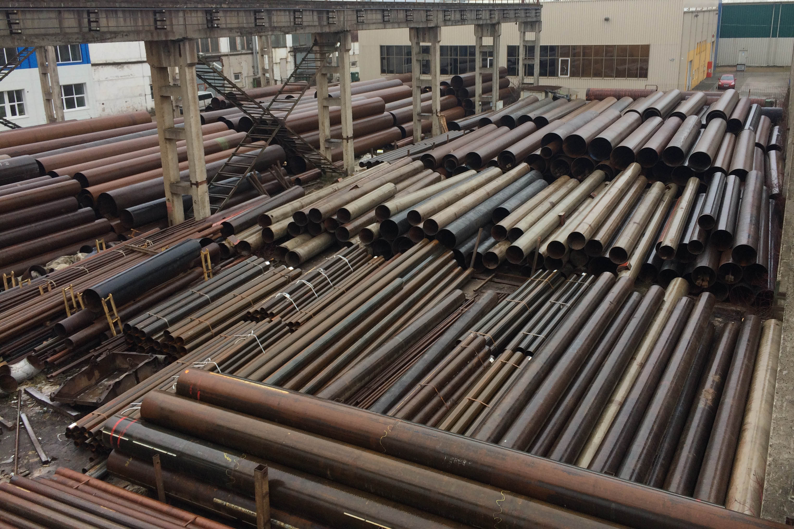

Новые 2А трубы второго сорта
Мы предлагаем широкий ассортимент новых стальных труб второго сорта (2А) из нашего склада в Вильнюсе.
Склад в Вильнюсе (Литва) был организован для продажи использованных труб в странах Балтии и Северных
странах и
для участия в тендерах с привлечением финансирования (факторинга) от европейских банков.
Между тем, мы получали заказы на новые второсортные стальные трубы. И мы начали их поставлять. И теперь у
нас в Вильнюсе 1500-2000 тонн новых второсортных труб на складе.
Новые трубы уже прошли таможенное оформление в Европейском Союзе (все пошлины оплачены). Мы продаем
продукцию на условиях DDP до вашего склада (или любого пункта назначения в Европе) от нашей литовской
компании (ЗАО «Baltic Tube Service»).
Актуальный прайс-лист может быть отправлен по запросу клиентаю

Типы новых труб:
- Новые трубы производятся в Еворопе, СНГ и Росии
- Сорта стали: S235, S275, S355 и лучше
- Техническое состояние: EN10219, GOST, TU (2A)
- Размеры: 168-1420 mm
- Загрузка до 24 тн на грузовик ("матрешка")
- Резка и сварка (повторная сварка) любой длины
- Покрытия: эпоксидная смола и грунтовка по запросу